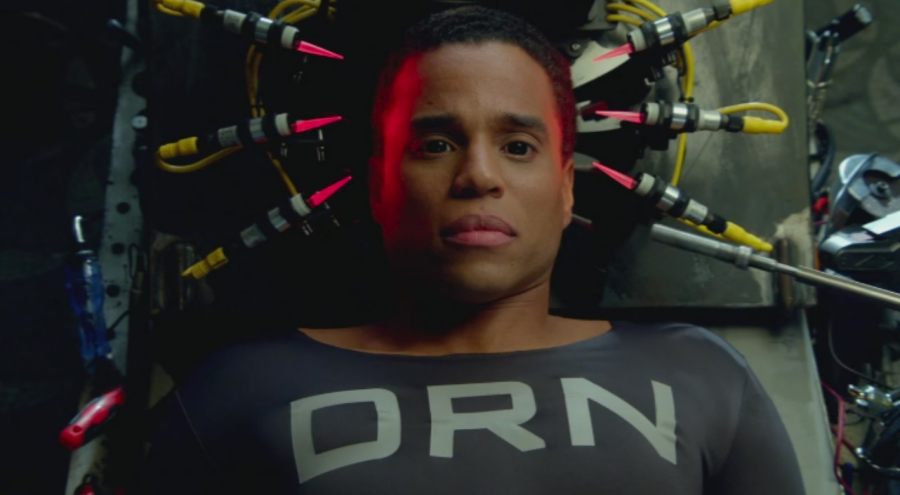
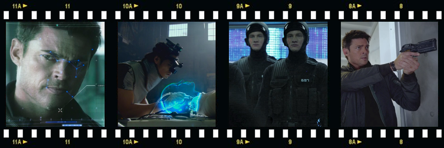

Almost Human is an American science fiction / crime drama series created by J. H. Wyman (of Fringe television series fame), produced by Frequency Films and Bad Robot Productions and distributed by Warner Bros.. The series aired from November 2013 to March 2014.
As in the year 2048 the uncontrollable advancement of science and technology caused crime rates to rise an astounding 400%, the strained police force has implemented a new radical strategy: every police officer is paired with a humanoid android.
John Kennex (Karl Urban), is a troubled detective, who has a very good reason to hate these new robot partners. Some two years previously, Kennex and his squad were raiding the hideout of a criminal gang known as the ‘Insyndicate’, but ended up being ambushed and outgunned. When Kennex’s partner got badly injured, and Kennex tried to help him, the accompanying android abandoned them both because he calculated that the wounded man’s chances of survival were very low and it wouldn’t have been ‘logical’ to try to save him. An ensuing explosion killed the injured officer and took off Kennex’s leg.
After waking up from a 17-month coma, Kennex has to deal not only with his cybernetic prosthetic leg and huge gaps in his memory (which he tries to recover through visits to a shady memory-recovery doctor called a ‘Recollectionist’), but also coming to terms with being betrayed by Anna, his former girlfriend.
To help him to recuperate, Captain Sandra Maldonado (Lili Taylor) recalls Kennex back to the force, and partners him with a standard-issue MX-43 android policeman. Their partnership doesn’t last long however. When the android chastises Kennex and threatens to report him for breaking the regulations, he gets thrown out of the moving vehicle onto the road, where he is hit by oncoming traffic and destroyed.
Detective Kennex is issued with a replacement android, an older DRN model decommissioned for police work and about to be transferred to the space station. Usage of the DRN-model androids for police work proved troublesome, as they were designed to be as close to human as possible, which unfortunately also meant that they sometimes had trouble dealing with their own emotional responses, what was the main reason why they were eventually replaced by the cold-logic-based MX units.
Kennex initially treats his DRN unit with the same disdain as other androids, but Dorian (Michael Ealy), as the android wants to be called, proves unique – not only intelligent, but also friendly, witty and much more human-like than the standard-issue MX units – and gradually grows on Kennex, although he would absolutely loathe to admit it. The partnership between Kennex and Dorian then provides the main framework for the story arc of the show.
Supported by a team consisting of detective Richard Paul (Michael Irby), geeky, but skilful technician Rudy Lom (Mackenzie Crook), and rather attractive detective Valerie Stahl (Minka Kelly) who is a love interest for the main protagonist, Kennex and Dorian deal during the course of the 13-episode series with cases that involve tailored biological weapons targeting only policemen, android prostitutes with human skin, high-tech identity theft involving face projection device, a deadly new drug called ‘the bends’, illegal human cloning, illicit trade in synthetic human organs, attention-seeking cyber criminal, assassins using precision-guided bullets capable of changing direction mid-flight, rogue combat android that goes on a rampage, mysterious deaths of genetically engineered girls linked to a new designer drug, automated house with homicidal tendencies, a serial killer stealing attractive facial features from his victims and transferring them onto his face, and yet another, seemingly copycat serial killer, stuffing the empty abdomens of his victims with straw, in a fashion strikingly similar to the method used by the killer caught by Kennex’s father 10 years previously and now serving a life sentence for the murders.

Despite the series receiving Emmy Awards nomination for Outstanding Special and Visual Effects, Fox cancelled the show after the first season citing high production costs and low ratings.